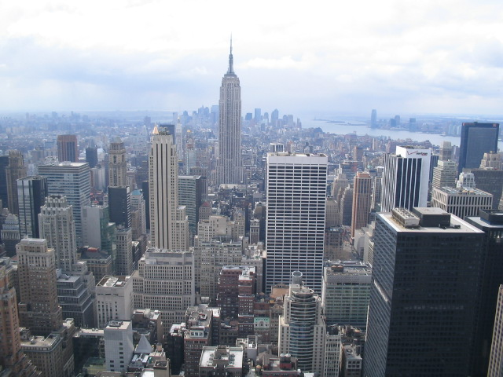
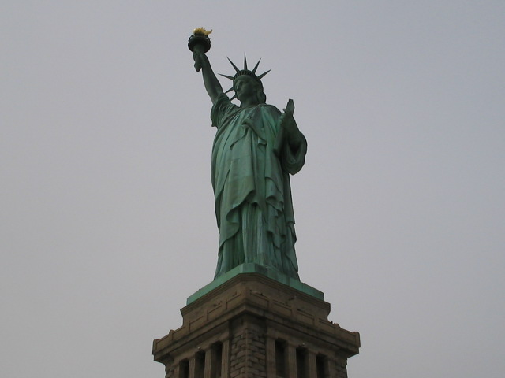

some where in the next town...
New York
This is a view from the rooftop of the Rockefeller Center building.
It is said that it is the first time in 20 years
that the rooftop of this building was opened.

This is a view from the rooftop of the Rockefeller Center building. It is said that it is the first time in 20 years that the rooftop of this building was opened.
From a ferry which was bound for Liberty Island.

From a ferry which was bound for Liberty Island.